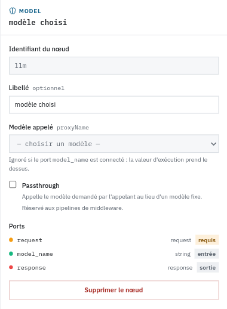
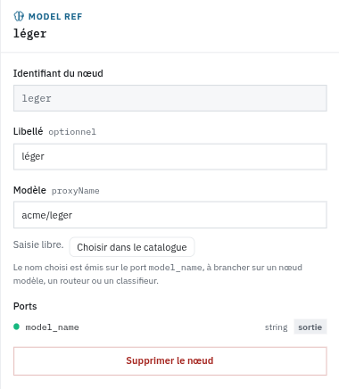
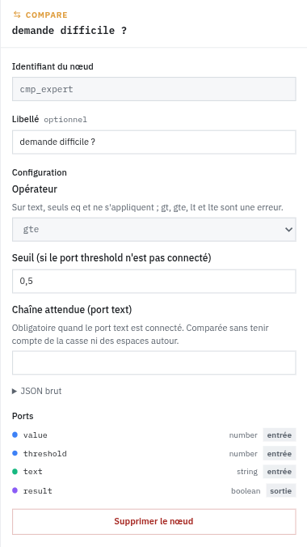
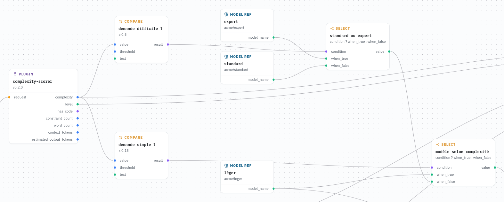
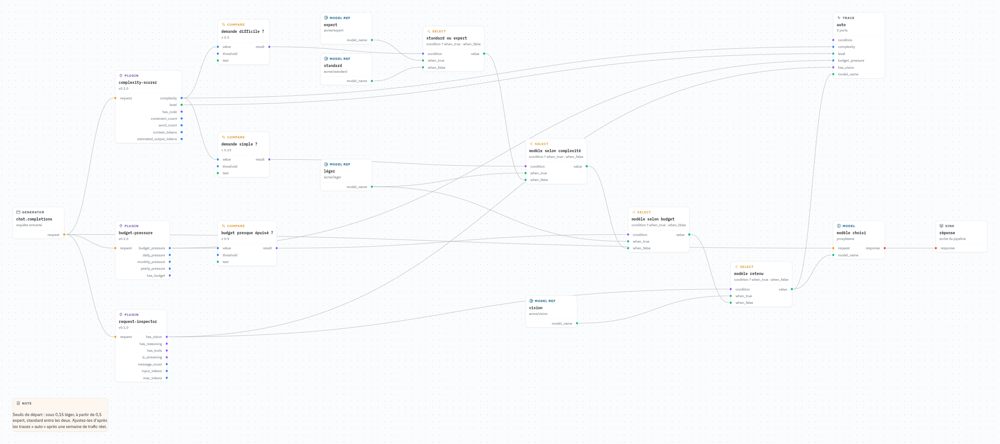
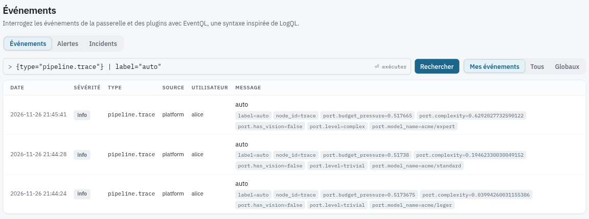

Guide : choisir le modèle automatiquement¶
Ce guide construit un modèle virtuel acme/auto qui choisit, à chaque requête, le modèle le moins cher capable d'y répondre. Une salutation part vers un petit modèle, une demande d'architecture vers le plus capable, une image vers un modèle qui voit. Les clients demandent acme/auto et n'ont plus à choisir.
Le fichier auto.bundle.json contient le résultat final : téléchargez-le, puis chargez-le avec le bouton Importer un bundle de la page Modèles virtuels. Après import, remplacez les quatre modèles d'exemple par les vôtres, dans les nœuds model_ref.
Prérequis¶
- Une organisation dont vous êtes administrateur, avec la permission d'écrire les modèles virtuels.
- Quatre modèles déclarés dans l'organisation, avec leur coût renseigné : c'est lui qui donne son sens au routage, et le tableau de bord le reprend pour mesurer l'économie. Ce guide les appelle :
| Modèle | Rôle |
|---|---|
acme/leger |
Petit modèle, rapide et peu cher : salutations, questions factuelles, traductions courtes |
acme/standard |
Modèle intermédiaire : explications, rédaction, comparaisons, débogage |
acme/expert |
Le plus capable et le plus cher : conception, analyses longues et contraintes |
acme/vision |
Un modèle qui lit les images |
- Les plugins
complexity-scorer,request-inspectoretbudget-pressurechargés sur le serveur. Aucun n'appelle de modèle : le choix ne coûte que quelques millisecondes.
Étape 1 : le modèle virtuel¶
Les clients ne doivent avoir qu'un nom à retenir : acme/auto. Le modèle virtuel porte ce nom et décide, à chaque requête, du modèle qui répondra vraiment. Changer de modèle, de seuil ou de fournisseur se fera ensuite ici, sans toucher aux applications qui l'appellent.
Créez un modèle virtuel nommé auto et ouvrez son éditeur (voir Modèle virtuel). Ajoutez un nœud model et reliez generator.request à model.request, puis model.response à sink.response.
Le nœud model ne nommera aucun modèle : son port model_name recevra le choix calculé par le graphe. Dès que ce port est connecté, le champ Modèle appelé est ignoré.

Étape 2 : mesurer la complexité¶
Pour choisir le modèle le moins cher capable de répondre, il faut d'abord estimer ce que la demande exige. Une salutation ne demande pas le même modèle qu'une analyse en dix contraintes. Le score de complexité fournit cette estimation, sans appeler de modèle, donc sans coût ni délai notables.
Ajoutez le plugin complexity-scorer et reliez generator.request à son port request. Il donne sur complexity un score entre 0 et 1, et sur level une étiquette, de trivial à very_complex.
Le score porte sur le dernier message de l'utilisateur. Il monte avec les contraintes explicites (format, longueur, ton, sources), les demandes de raisonnement (comparer, justifier, concevoir), la présence de code et la structure du texte. Quelques mesures, pour se faire une idée de l'échelle :
| Score | Demande |
|---|---|
| 0,033 | Quelle heure est-il à Tokyo ? |
| 0,040 | Bonjour ! |
| 0,082 | Traduis « bonne journée » en anglais. |
| 0,083 | Écris une fonction Python qui inverse une chaîne de caractères. |
| 0,127 | Propose un plan de formation de trois mois pour un développeur junior, avec des objectifs par semaine et un tableau de suivi. |
| 0,194 | Rédige un courriel de relance pour une facture impayée depuis trente jours, sur un ton courtois mais ferme. |
| 0,195 | Explique comment fonctionne le protocole HTTPS et pourquoi il protège les données échangées avec un site. |
| 0,228 | Compare les avantages et les inconvénients du télétravail pour une petite équipe, en trois paragraphes. |
| 0,433 | Pourquoi mon script Python renvoie-t-il KeyError: 'nom' ? (avec le bloc de code) |
| 0,433 | Analyse les risques juridiques d'un contrat de sous-traitance sans clause de confidentialité, compare deux options de rédaction et recommande la plus sûre. |
| 0,629 | Conçois l'architecture d'un service de réservation qui tient 10 000 requêtes par seconde : justifie le choix de la base de données, du cache et de la file de messages, et présente les compromis dans un tableau. |
| 0,972 | Une analyse comparative de deux architectures avec trois sources, un tableau, des recommandations chiffrées, 800 mots au plus et un ton formel. |
L'échelle est tassée vers le bas : une demande ordinaire dépasse rarement 0,25. D'où les seuils de ce guide, 0,15 et 0,5, plutôt que des tiers réguliers.
Étape 3 : trois niveaux¶
Un score ne choisit rien à lui seul : il faut le traduire en décision. Trois niveaux suffisent le plus souvent à capter l'essentiel de l'économie, car la plupart des demandes sont simples, et chaque niveau de plus complique le réglage sans gain proportionnel.
Deux questions suffisent à ranger une demande en trois niveaux. Chacune est un compare, et chaque réponse choisit entre deux modèles avec un select.
Ajoutez trois model_ref, réglés sur acme/leger, acme/standard et acme/expert, puis :

- Un
comparelibellé « demande difficile ? », opérateurgte, seuil 0,5. Reliezcomplexity-scorer.complexityà son portvalue. - Un
selectlibellé « standard ou expert ». Reliez leresultdu premiercompareà sacondition, lemodel_refexpert àwhen_true, le standard àwhen_false. - Un
comparelibellé « demande simple ? », opérateurlt, seuil 0,15, lui aussi alimenté parcomplexity. - Un
selectlibellé « modèle selon complexité ». Saconditionvient du secondcompare,when_truedumodel_refléger, etwhen_falsede la sortievaluedu premierselect.
Le second select reçoit ainsi soit le modèle léger, soit le choix déjà fait entre standard et expert. Le graphe se lit comme une suite de questions : simple ? léger ; sinon, difficile ? expert ; sinon, standard.


Étape 4 : ménager le budget¶
Un utilisateur qui a presque épuisé son budget sera bientôt refusé par son quota, au milieu de son travail. Mieux vaut le servir avec le modèle léger tant qu'il reste de quoi : une réponse plus simple vaut mieux qu'un refus, et le budget tient jusqu'à la fin de la période.
Ajoutez le plugin budget-pressure, alimenté par generator.request. Son port budget_pressure donne la part déjà consommée du budget le plus tendu qui s'applique à la requête, celui de l'utilisateur, de son organisation ou de son équipe, sur le jour, le mois ou l'année : 0,9 veut dire 90 %. Sans budget, il vaut 0.
Ajoutez un compare libellé « budget presque épuisé ? », opérateur gte, seuil 0,9, et un select libellé « modèle selon budget » : condition depuis ce compare, when_true depuis le model_ref léger, when_false depuis la sortie du select de l'étape 3.
Étape 5 : les images¶
Une image ne peut aller que vers un modèle qui la lit, quel que soit le reste : envoyée à un modèle qui ne voit pas, elle est ignorée, ou la requête échoue. Cette règle passe donc avant toutes les autres.
Ajoutez le plugin request-inspector, alimenté par generator.request, un model_ref réglé sur acme/vision et un dernier select libellé « modèle retenu » : condition depuis request-inspector.has_vision, when_true depuis le model_ref vision, when_false depuis le select de l'étape 4.
Placé en dernier, ce select l'emporte sur le budget : un utilisateur au bout de son budget qui envoie une image va vers le modèle vision, puisque le modèle léger ne la verrait pas. Si vous préférez l'inverse, échangez l'ordre des deux étapes.
Reliez enfin la sortie value de ce dernier select au port model_name du nœud model.
Étape 6 : tracer le choix¶
Un routage qu'on ne voit pas ne se règle pas. Sans trace, on ne sait ni quel modèle a répondu à quelle demande, ni si les seuils envoient trop de demandes vers le modèle cher. La trace enregistre, pour chaque requête, ce que le graphe a mesuré et ce qu'il a décidé.
Ajoutez un nœud trace, libellé auto, avec cinq ports : complexity (number), level (string), budget_pressure (number), has_vision (boolean) et model_name (string). Reliez-y les sorties du même nom, et la sortie du dernier select sur model_name. Chaque requête produit un événement pipeline.trace qui dit ce que le graphe a mesuré et ce qu'il a choisi : c'est sur ces événements que se règlent les seuils.
Une note sur le canevas rappelle les seuils retenus et la date à laquelle les revoir.
Enregistrez. Le bandeau indique Graphe valide.

Étape 7 : tester¶
Avant de laisser acme/auto choisir pour les utilisateurs, vérifiez qu'il choisit comme prévu sur des demandes dont vous connaissez la réponse : une simple, une ordinaire, une exigeante, une avec image.
curl -s http://localhost:3002/api/v1/chat/completions \
-H "Authorization: Bearer $XOLO_TOKEN" -H 'Content-Type: application/json' \
-d '{"model":"acme/auto","messages":[{"role":"user","content":"Bonjour !"}]}'
Les traces enregistrées pour quelques demandes :
| Demande | complexity |
level |
model_name |
|---|---|---|---|
| Bonjour ! | 0,040 | trivial |
acme/leger |
| Explique comment fonctionne le protocole HTTPS… | 0,195 | trivial |
acme/standard |
| Conçois l'architecture d'un service de réservation… | 0,629 | complex |
acme/expert |
| Bonjour !, avec une image jointe | 0,040 | trivial |
acme/vision |

Étape 8 : régler les seuils¶
Les seuils de départ viennent de quelques demandes d'exemple ; vos utilisateurs écrivent autrement. Seul le trafic réel dit si le compromis entre coût et qualité est le bon.
Après une semaine de trafic réel, la page Événements filtrée sur {type="pipeline.trace"} | label="auto" donne la répartition des demandes entre les modèles, et le tableau de bord ce qu'elles ont coûté. Si le modèle expert reçoit trop de demandes qui n'en valaient pas la peine, montez son seuil ; si les utilisateurs se plaignent des réponses du modèle léger, baissez le sien.
Pour essayer un nouveau seuil sans l'imposer à tous, un nœud sample à 10 % par utilisateur, branché sur un select entre l'ancien et le nouveau réglage, et un port de plus sur la trace, permettent de comparer les deux sur les mêmes semaines.
Ce qu'il faut savoir¶
- Le score mesure la forme de la demande, pas la difficulté du sujet. « Explique la différence entre une SARL et une SAS, puis indique laquelle convient à deux associés qui veulent lever des fonds » obtient 0,096 et part vers le modèle léger : courte, sans contrainte, elle ressemble à une question simple. Essayée avec un petit modèle local, la réponse contenait des erreurs juridiques. Pour qu'un domaine sensible aille toujours vers le modèle expert, ajoutez un
text-classifier, sans appel de modèle, ou unllm-classifier, plus précis mais qui ajoute un appel, suivi d'uncomparesur la catégorie et d'unselectde plus. - Pas de repli avec un nom calculé. Le nœud
model_fallbackignore sa liste dès que son portmodel_nameest connecté : avec un modèle choisi par le graphe, une panne du fournisseur remonte au client. - Chaque modèle nommé dans le graphe est accessible à travers lui. Une équipe qui a accès à
acme/autopeut se voir serviracme/expertmême sans accès direct à ce modèle : c'est voulu, le modèle virtuel décide pour elle. - Au-delà de trois signaux, les
compareetselects'empilent. Unmathen moyenne pondérée de la complexité, de la pression budgétaire et du coût énergétique donne un score unique, et le pluginfuzzy-evaluatordes transitions plus douces que des seuils.
Pour aller plus loin¶
- Être prévenu quand un budget s'épuise, plutôt que seulement rabattre vers le modèle léger : voir le guide des événements personnalisés.